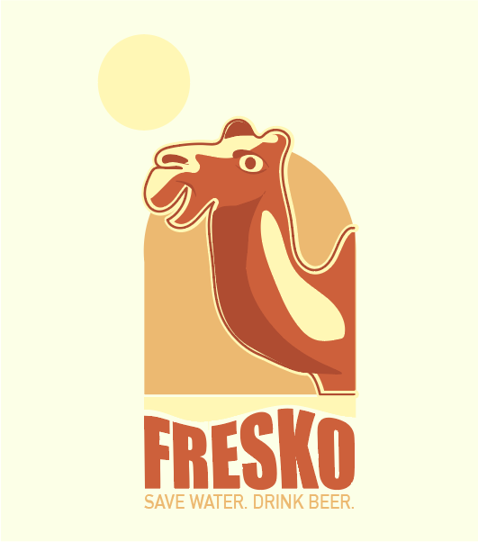

Bienvenue sur votre site Fresko !
L'alcool est dangereux pour la santé. Il peut aussi l'être pour la nature. Si la bière est un des alcool les moins polluant il garde toute même son impact sur l'environnement : 1,5 kg d'émission de CO2 par litre. Fresko oeuvre pour laisser une trace positive de son activité à mère nature. Engagé en faveur de l'environnement, nous veillons à préserver la ressource en eau. Notre action ne s'arrête pas là. Réduire les émissions de CO2 et maximiser la circularité font aussi parti de nos priorités. Boire une bière devient une bonne action avec Fresko. :)
Faites avec amour mais aussi moins d'OGM'.
Notre histoire ne fait que commencer, écrivons la suite ensemble.
"Fresko est une marque née au Pays Basque, à Bayonne. Fresko signifie "fraîcheur" dans la langue de mes ancêtres, le basque. Chaque année aux fêtes de Bayonne, plus d'un million de litres de bière sont consommés au son des bandas. C'est durant l'été 2022, le foulard rouge au cou dans la pena d'un ami que m'est venue l'envie de participer. D'abord participer à l'écoulement de ces litres, mais aussi par la même occasion à la réduction de l'impact de notre consommation sur l'environnement. Cela en créant une bière plus responsable de l'environnement. Que vient faire le chameau dans cette histoire ? J'ai toujours reproché à ma mère de ne pas boire d'eau. Cela d'une manière des plus constructive : en l'appelant "le chameau". Cet animal pouvant ne pas boire d'eau pendant des jours. Par ailleurs, la marque n'en est qu'au début de sa traversée du désert. Selon l'Insee 50% des entreprises créent échouent dans leurs cinq premières année. Pour autant, nous comptons sur la volonté de chacun à contribuer à un monde meilleur pour nous aider" - Estelle Lesbats, fondatrice de Fresko. 
Logo créée sur illustrator